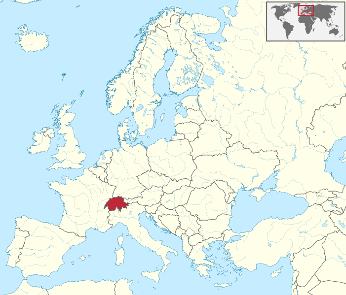
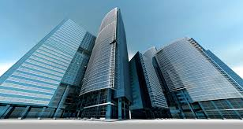

Suisse
La Suisse, en forme longue la Confédération suisse est un pays d'Europe centrale et, selon certaines définitions, de l'Ouest, formé de 26 cantons, avec Berne pour capitale . La Suisse est bordée par l'Allemagne au nord, l'Autriche et le Liechtenstein à l'est-nord-est, l'Italie au sud et au sud-est et la France à l'ouest. C'est un pays sans côte océanique, mais qui dispose d'un accès direct à la mer par le Rhin. La superficie de la Suisse est de 41 285 km2. Elle est géographiquement divisée entre les Alpes, le plateau suisse et le Jura. Les Alpes occupent la majeure partie du territoire 60%. La population de la Suisse dépasse les 8,5 millions d'habitants et elle se concentre principalement sur le plateau, là où se trouvent les plus grandes villes. Parmi elles, Zurich,Genève etBâle sont trois importants centres économiques et des villes mondiales où se trouvent des organisations internationales. L'établissement de la Confédération suisse est traditionnellement daté au , jour célébré chaque année en tant que Fêtenationale. Le pays a une longue tradition de neutralité politique et militaire et n'a rejoint l'ONU qu'en . Il poursuit cependant une politique étrangère active et s'implique fréquemment dans des processus de construction de la paix autour du monde. La Suisse est aussi le berceau du CICR ; elle abrite en outre de nombreuses organisations internationales, dont le deuxième plus grand siège de l'ONU après celui de New York : l'Office des Nations unies à Genève ainsi que le siège de la Banque des règlements internationaux à Bâle et du Comité International Olympique à Lausanne. Dans le domaine européen, elle est un des membres fondateurs de l'Association européenne de libre-échange, et membre de l'espace Schengen, mais pas de l'Union européenne ni de l'Espace économique européen. La Suisse possède le deuxième PIBnominal le plus élevé au monde par habitant, ainsi que le neuvième PIBen parité de pouvoir d'achat selon le Crédit suisse et le FMI . Les Suisses ont la deuxième plus haute espérance de vie au monde sur la liste publiée par le DAES des l'ONU. La Suisse est classée comme l'un des dix pays les moins corrompus ; de plus, sur les cinq dernières années, le pays a été classé premier en termes de compétitivité économique et touristique, selon respectivement le Rapport sur la compétitivité mondiale et le Rapport sur la compétitivité du secteur des voyages et du tourisme, tous deux réalisés par le forum économique mondial.
| Administration | Forme de l'État | Roi | Langues officielles |
| État fédéral avec régime parlementaire | Simonetta Sommaruga | Allemand Français Italien Romanchen | |
| Géographie | Capitale | Superficie totale | localisation |
| Berne | 41 285 km2 | maps | |
| Démographie | Gentilé | Population totale | Densité |
| Suisse, Suissesse | 8 544 5273 hab. | 207 hab./km2 | |
| Économie | PIB nominal par hab | l'IDH | Monnaie |
| 87 475,464 $ | 0,9444 | Franc suisse |
Économie
L’économie suisse figure parmi les plus prospères et les plus développées du monde bien que la Suisse soit très pauvre en matières premières et ne dispose pas d'énergies fossiles. Orientée vers les services avec les banques et les assurances, le tourisme, le transport, ainsi que vers l'industrie avec notamment la mécanique de précision et des spécialités industrielles, le pays produit surtout des biens à forte valeur ajoutée. Selon le Global Competitiveness Report - du forum économique mondial, la Suisse est le 19e pays industriel au monde au regard de sa production annuelle et la plus forte production industrielle par habitant au monde avec 12 400 $ de production industrielle par habitant. Le niveau de vie est l’un des plus élevés du monde. De plus, sa stabilité et sa neutralité ont attiré bon nombre de capitaux étrangers et d’organisations internationales comme l'ONU. Le secteur tertiaire représentait en 72,4 % du PIB et 295 622 entreprises, il emploie 72,5 % de la population active ; en , il en occupait 40%. Le secteur secondaire représentait en 26,3 % du PIBet 76 927 entreprises, il emploie 23,7 % de la population active ; en , il occupait 25 % de la population environ. Le secteur primaire représentait en 1,3 % du PIB et 68 050 entreprises, il emploie 3,8 % de la population active ; en , il occupait 15 % de la population environ. Après plusieurs années de croissance nulle ou faible, une reprise s’est fait ressentir dès . En la croissance du PIB est 2,5 %, puis 2,6 % en et elle passe à 3,6 %. Durant le premier semestre , le PIB n’augmente que modestement puis fléchit au deuxième semestre. À cause de l’effet de base, la croissance est 1,9 %, chiffre à relativiser étant donné la Le taux de chômage, bien que variable selon les cantons, se maintient à un niveau très bas forte croissance démographique (+ 1,3 %).le plus bas en Europe mais le nombre des demandeurs d'emploi, 158 629 personnes en décembre 2015, est à son plus haut niveau depuis avril . Ce taux de chômage néanmoins très faible peut s'expliquer par une valorisation de l'apprentissage. En effet, deux tiers des plus de quinze ans font le choix de ce système de formation. Banque Suisse 